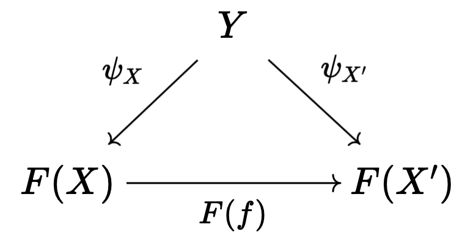
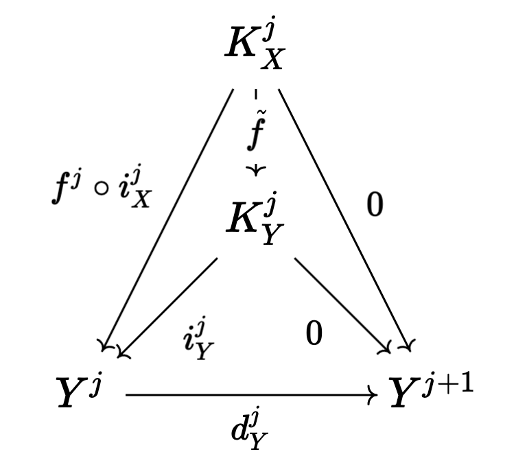

Introduction to derived functors and derived categories
Table of Contents
Originally posted:
1. Introduction
The goal of this post is to explain the general construction of derived functors and derived categories, then use these ideas to introduce the general notion of sheaf cohomology and hypercohomology. I might also talk a bit about Hochschild homology/cohomology (which has a very nice explanation via derived functors).
2. Category theory basics
In this section, I'll go over a few basic ideas in category theory.
Definition 2.1 (Initial and final objects). Let \(\mathcal{C}\) be a category, an object \(I\) in \(\mathcal{C}\) is said to be initial if for any other object \(X\), there is a unique morphism \(I \to X\). An object \(T\) is terminal if for any \(X\), there is a unique morphism \(X \to T\). An object is said to be a zero object (denoted \(0\)) if it is both initial and terminal.
Remark 2.1. It is easy to see that initial and final objects (if they exists) are unique up to unique isomorphism.
Definition 2.2 (Comma category). Let \(F : \mathcal{C} \rightarrow \mathcal{D}\) be a functor, let \(X\) be an object of \(D\). The comma category \((X \downarrow F)\) is defined as follows:
- The objects are pairs \((C, f : x \rightarrow F(C))\) for objects \(C \in \text{Obj}(\mathcal{C})\).
- The morphisms between \((C, f)\) and \((C', f' : X \rightarrow F(C'))\) are morphisms \(h : C \rightarrow C'\) in \(\mathcal{C}\) such that \(F(h) \circ f = f'\).
It is very easy to verify that we have defined a valid category. We can also define another type of comma category, \((F \downarrow X)\), where we look at objects of the form \((C, f : F(C) \rightarrow x)\), and define the morphisms in the obvious way.
Example 2.1. The category of pointed topological spaces is precisely \((\cdot \downarrow \textbf{Top})\).
Definition 2.3 (Universal morphism). A universal morphism is an initial object in \((X \downarrow F)\), a particular comma category, or a terminal object in \((F \downarrow X)\). Intuitively, a universal morphism encodes a property which characterizes some object up to isomorphism. We can unravel the definition of a universal morphism to better conceptualize it. In particular, a universal morphism (in \((X \downarrow F)\)) is a pair \((C, f : X \rightarrow F(C))\) such that for any other pair \((C', f' : X \rightarrow F(C'))\), there is a unique arrow \(h : C \rightarrow C'\) such that the following diagram commutes:
Corollary 2.1. A universal morphism is unique up to unique isomorphism in the comma category: this follows immediately from the fact that initial and terminal objects are unique up to unique isomorphism.
Example 2.2 (Tensor algebra). The tensor algebra of a vector space is a great example of an object characterized via a universal property. In particular, given some vector space \(V\) over \(k\), the property which characterizes the tensor algebra \(T(V)\) is that any linear map \(V \rightarrow A\) of \(V\) to a \(k\) -algebra extends uniquely to an algebra homomorphism from \(T(V)\) to \(A\). Let \(\text{For} : \textbf{Alg}_k \rightarrow \textbf{Vect}_k\) be the forgetful functor which sends a \(k\) -algebra to its underlying vector space. We take \(F\) to be \(\text{For}\), and we take \(X = V\). Our desired object is an initial object \((T(V), f : V \rightarrow \text{For}(T(V)))\) in the comma category, which is to say that for any \(A \in \textbf{Alg}_k\) and linear map \(f' : V \rightarrow \text{For}(A)\), there must be a unique algebra homomorphism \(g : T(V) \rightarrow A\) such that \(\text{For}(g) \circ f = f'\).
Remark 2.2. A word of caution: this formulation of a universal morphism can fail to nicely capture many instances where a "universal property" may describe a particular object. A good example is the tensor product. Technically, one can formulate a definition of the tensor product of two vector spaces, \(V \otimes W\), via the language of universal morphisms (see nLab), but in practice, it is better to just say that \(V \otimes W\) is an object of \(\textbf{Vect}_k\) and a bilinear map \(j : V \times W \rightarrow V \otimes W\) such that for any bilinear map \(f : V \times W \rightarrow Z\), there is a unique morphism \(h : V \otimes W \rightarrow Z\) such that \(h \circ j = f\). The reason why we cannot use a universal morphism naively in this case is because of the bilinear attribute of the maps \(j\) and \(f\) (we can't specify this particular attribute as native to the category in which we are working because we also need to work with the standard linear map \(h\)). Nevertheless, it is easy to check directly that this definition uniquely characterizes \(V \otimes W\) (if it exists) up to unique isomorphism.
Having introduced universal properties, we can look at a related idea: adjoint functors.
Mantra 2.1. The best, succinct way to think of a functor \(F : \mathcal{D} \rightarrow \mathcal{C}\) adjoint to functor \(G : \mathcal{C} \rightarrow \mathcal{D}\) is that \(F\) is the most efficient way to systematically "solve the problem" posed by \(G\). If \(G\) is, for example, a forgetful functor which throws away some of the structure of category \(\mathcal{C}\), is there a method which reconstructs an element of \(\mathcal{C}\) from \(\mathcal{D}\), and imposes the minimal amount of extra structure possible? If such a method exists, and is functorial, in the sense that it works the same for any object, then it can be described via a functor \(F : \mathcal{D} \rightarrow \mathcal{C}\) which is adjoint to \(G\).
Mantra 2.2. Another way to internalize this same intuition is via universal properties. When we find an object which satisfies a universal property, we are effectively finding the "most efficient" object which satisfies some desired property. An adjoint functor is a technique to define such universal objects at a global, categorical level, rather than locally. To be more specific, writing down a universal morphism is dependent on a particular choice of object \(X\) relative to which we define a comma category. One way to interpret the utility of an adjoint functor is that it "chooses every \(X\) at once" in a functorial manner. In the previous tensor algebra example, we are choosing a particular \(X = V\), and defining \(T(V)\) via a universal property. In fact, \(T\) should be a functor in its own right, and it should work for every choice of \(V\) is a functorial manner. Indeed, it is the case that \(T\) is a functor adjoint to \(\text{For}\).
Definition 2.4 (Adjoint functor). A functor \(F : \mathcal{D} \rightarrow \mathcal{C}\) is said to be left-adjoint if for each \(X \in \text{Obj}(\mathcal{C})\), there exists a universal morphism in \((F \downarrow X)\). The existence of a universal morphism simply means that there is some \((G(X), f_X : F(G(X)) \rightarrow X)\) such that for any other \((C, g : F(C) \rightarrow X)\), there is a unique morphism \(h : C \rightarrow G(X)\) where \(f_X \circ F(h) = g\). From here, it is possible to show that we can define a functor \(G : \mathcal{C} \rightarrow \mathcal{D}\) such that \(f_X \circ F(G(h)) = h \circ f_{X'}\) for all \(h : X' \rightarrow X\), as one might expect/hope. In particular, we simply let \(G\) take object \(X\) to \(G(X)\). Additionally, given arrow \(h : X' \rightarrow X\) in \(\mathcal{C}\), we obtain objects \((G(X), f_X : F(G(X)) \rightarrow X)\) and \((G(X'), h \circ f_{X'} : F(G(X')) \rightarrow X)\). We then obtain unique morphism \(G(h) : G(X') \rightarrow G(X)\) where \(f_X \circ F(G(h)) = h \circ f_{X'}\), as desired. To prove that this mapping of objects/arrows in a valid functor, we simply note that \(G\) takes identity arrows to identity arrows and preserves compositions due to uniqueness of \(G(h)\).
There is a similar, dual construction, where we say that \(G : \mathcal{C} \rightarrow \mathcal{D}\) is right-adjoint if for each \(X \in \text{Obj}(\mathcal{D})\), there exists a universal morphism in \((X \downarrow G)\). We define functor \(F : \mathcal{D} \rightarrow \mathcal{C}\) analogously.
Claim 2.1. If \(F : \mathcal{D} \rightarrow \mathcal{C}\) is left-adjoint, and \(G : \mathcal{C} \rightarrow \mathcal{D}\) is the corresponding induced functor, then \(G\) is right-adjoint, and the corresponding induced functor is \(F\). Similarly, if \(G : \mathcal{C} \rightarrow \mathcal{D}\) is right-adjoint and \(F\) is the induced functor, then \(F\) is left-adjoint, and its induced functor is \(G\).
Proof. Let's look at the first case. We need to show that for each \(X\) in \(\mathcal{D}\), then there is initial object \((F(X), f_X : X \rightarrow G(F(X)))\) in the comma category. Thus, we need to produce a unique arrow \(g : F(X) \rightarrow Y\) for some \((Y, h : X \rightarrow G(Y))\) such that \(G(g) \circ f_X = h\). Of course, we know that \(F\) is left-adjoint with induced functor \(G\), so we can find universal morphism in \((F \downarrow Y)\). This will be some terminal \((G(Y), g_Y : F(G(Y)) \rightarrow Y)\). So, given \((Z, p : F(Z) \rightarrow Y)\), we have unique \(p' : Z \rightarrow G(Y)\) such that \(g_Y \circ F(p') = p\). In particular, we can set \(Y = F(X)\) and \(Z = X\) with \(p = \text{id}\), to get \(p' : X \rightarrow G(F(X))\) where \(g_{F(X)} \circ F(p') = \text{id}\). In addition, recall that \(g_Y\) satisfies the naturality condition:
\begin{equation} g_Y \circ (F \circ G)(p) = p \circ g_{Y'} \end{equation}for every \(p : Y' \rightarrow Y\). We claim that we can set \(f_X = p'\). Then, given \((Y, h : X \rightarrow G(Y))\), consider \(g_Y \circ F(h)\): we claim that this is the \(g\) we need. Then we have arrow \(G(g) \circ f_X = G(g_Y) \circ G(F(h)) \circ p'\), and applying \(F\) gives us \((F \circ G)(g_Y) \circ (F \circ G)(F(h)) \circ F(p')\). From the naturality condition,
\begin{equation} g_Y \circ F(h) \circ g_{F(X)} = g_Y \circ g_{(F \circ G)(Y)} \circ (F \circ G)(F(h)) = g_Y \circ (F \circ G)(g_Y) \circ (F \circ G)(F(h)) \end{equation}where the final equality comes from the naturality condition for \(p = g_Y\). It follows that
\begin{equation} g_Y \circ F(G(g_Y \circ F(h)) \circ p') = g_Y \circ (F \circ G)(g_Y) \circ (F \circ G)(F(h)) \circ F(p') = g_Y \circ F(h) \circ g_{F(X)} \circ F(p') = g_Y \circ F(h) \end{equation}and by uniqueness, \(h = G(g_Y \circ F(h)) \circ p'\), or in other words, \(G(g) \circ f_X = h\), as desired. Thus, \(G\) is right-adjoint with induced functor \(F\). Proving the second case is follows more or less the same process, so we will omit the proof. \(\blacksquare\)
Example 2.3 (Tensor algebra, again). The forgetful functor \(\text{For} : \textbf{Alg}_k \rightarrow \textbf{Vect}_k\) of Example 2.2 is right-adjoint (if the tensor algebra \(T(V)\) exists). In particular, we have initial \((T(V), f : V \rightarrow \text{For}(T(V)))\) for each \(V \in \text{Obj}(\textbf{Vect}_k)\), which is a universal morphism in \((V \downarrow \text{For})\).
Now, let us discuss the notion of limits and colimits, which will prove to be useful in our discussion of Abelian categories. Similar to universal morphisms and adjoints, we can think of limits and colimits as particular initial/terminal objects in a category.
Definition (Diagram). A \(\mathcal{D}\) -shaped diagram in \(\mathcal{C}\) is a functor \(F : \mathcal{D} \rightarrow \mathcal{C}\). We can form a category of \(\mathcal{D}\) -shaped diagrams in \(\mathcal{C}\), \(\mathcal{D}[\mathcal{C}]\), by taking these functors are objects, and natural transformations as arrows.
Definition (Cone). If \(F : \mathcal{D} \rightarrow \mathcal{C}\) is a \(\mathcal{D}\) -shaped diagram in \(\mathcal{C}\), and \(Y\) is an object in \(\mathcal{C}\), we define a cone from \(Y\) to \(F\) to be a collection of morphisms \(\psi_X : Y \rightarrow F(X)\) for each object \(X\) in \(\mathcal{C}\), such that the following diagrams commute:

for each arrow \(f : X \rightarrow X'\). Similarly, we define a cone from \(F\) to \(Y\) (also called a co-cone) by reversing all arrows in the above diagram. One can also formulate cones in terms of an appropriate comma category, if they wish. The category of cones to \(F\) takes cones from some object to \(F\) as objects, and as morphisms, arrows \(g : Y' \rightarrow Y\) in \(\mathcal{C}\) making the following diagrams commute:
with the category of co-cones (or cones from \(F\)) being defined by again reversing the arrows in the above diagram. Checking that these are categories is easy.
Definition. If \(F : \mathcal{D} \rightarrow \mathcal{C}\) is a diagram, a limit \(\lim F\) is an initial object in the category of cones going to \(F\). Similarly, a colimit \(\text{colim} \ F\) is a final object in the category of cones going from \(F\). For a more detailed explanation of limits and colimits, and how they are categorical generalizations of inverse limits and direct limits, see my previous blog post.
Using limits and colimits, we are able to define an equalizer within a category, which can be thought of as a categorical generalization of "the set of arguments where two functions agree".
Definition. Let \(\mathcal{C}\) be a category, let \(X\) and \(Y\) be objects, and let \(f, g : X \rightarrow Y\) be arrows. Taking \(X\) and \(Y\) as objects, \(f\), \(g\), and the identity arrows as morphisms, we form a subcategory, and if we let \(\mathcal{D} = \{1, 2\}\) with arrows \(a\) and \(b\) pointing from \(1\) to \(2\) (along with identity arrows), we easily can form a diagram \(F : \mathcal{D} \rightarrow \mathcal{C}\) sending \(a\) to \(f\) and \(b\) to \(g\). The equalizer \(\text{Eq}(f, g)\) is \(\lim F\). Unpacking this definition, the equalizer is an object \(C \in \mathcal{C}\) and maps \(\psi_X : C \rightarrow X\) and \(\psi_Y : C \rightarrow Y\) such that \(g \circ \psi_X = \psi_Y = f \circ \psi_x\) which satisfy the required universal property. Similarly, the coequalizer \(\text{Coeq}(f, g)\) is \(\text{colim} \ F\).
Remark. One can immediately see how this generalizes the notion of "the set on which two functions are equal". Being sloppy and abusing notation, we can have \(C = \{(x, y) \ | \ y = f(x) = g(x)\}\), \(\psi_X\) the projection onto the first argument, and \(\psi_Y\) projection onto the second: then \(C\) satisfies the desired criterion. Ignore this remark is you find it too hand-wavy.
To conclude, let us briefly introduce the notion of products and coproducts, which are another crucial component of Abelian categories.
Definition. Let \(\mathcal{C}\) and \(\mathcal{D}\) be categories, where \(\mathcal{D}\) is an "index set" (i.e. it has no non-identity morphisms), and consists of set of objects \(I\). Suppose \(F : \mathcal{D} \rightarrow \mathcal{C}\) is a diagram, which simply amounts to choosing some indexed family \((X_i)_{i \in I}\) of objects \(X_i\) in \(\mathcal{C}\). Then a product of the \(X_i\) is a limit of \(F\). Unrolling this definition, it is object \(C\) in \(\mathcal{C}\), along with morphisms \(\pi_i : C \rightarrow X_i\) (projections) which is initial in the cone category. Similarly, a coproduct is a colimit of \(F\).
3. Abelian categories
Here, we will develop some central results revolving around Abelian categories, which were introduced by Grothendieck in his Tohoku paper, and provide the arena in which it makes sense to talk about exact sequences, homology, and cohomology is a general, categorical sense.
We need to begin with a lot of definitions (basically a collection of categorical generalizations of things which come up frequently in algebra).
Definition 3.1 (Preadditive category). A preadditive category \(C\) is a category such that each hom-set has the structure of an Abelian group, with composition being bilinear over the group addition:
\begin{align} f \circ (g + h) = (f \circ g) + (f \circ h) \ \ \ \ \text{and} \ \ \ \ (g + h) \circ f = (g \circ f) + (h \circ f). \end{align}Definition 3.2 (Zero morphisms). Let \(\mathcal{C}\) be a category, an arrow \(f : X \rightarrow Y\) is said to be constant if for any morphisms \(g, h : W \rightarrow X\), we have \(f \circ g = f \circ h\). An arrow is said to be coconstant if for any morphisms \(g, h : Y \rightarrow Z\), we have \(g \circ f = h \circ f\). A morphism which is both constant and coconstant is called a zero morphism. We say that \(C\) is a category with zero morphisms such that for every two objects \(X\) and \(Y\), there is a morphism \(0_{XY} : X \rightarrow Y\) such that for any two arrows \(f : X \rightarrow Y\) and \(g : Y \rightarrow Z\), the following diagrams commute:
Remark 3.1. Note that if \(\mathcal{C}\) is a category with zero morphisms, then the arrows \(0_{XY}\) are unique. To see this, let \(Z = Y\), let \(g = \text{id}\), let \(f = 0_{XY}'\): some other morphism satisfying the same criteria as \(0_{XY}\). Then applying the diagram, we find that \(0_{XY} = 0_{YY} \circ 0_{XY}'\) and \(0_{XY}' = 0_{YY} \circ 0_{XY}'\), so \(0_{XY} = 0_{XY}'\). We can also check that all of the \(0_{XY}\) are zero morphisms. We have \(0_{XY} = 0_{YZ} \circ f\) for any arrow \(f : X \rightarrow Y\) and we have \(g \circ 0_{XY} = 0_{XZ}\) for any arrow \(g : Y \rightarrow Z\): this immediately gives us what we want.
Claim 3.1. If \(\mathcal{C}\) is an object with zero object \(\textbf{0}\), then \(\mathcal{C}\) has zero morphisms. In particular, we have natural maps \(t_X : X \rightarrow \textbf{0}\) and \(i_Y : \textbf{0} \rightarrow Y\), and \(0_{XY} = i_Y \circ t_X\) endow \(\mathcal{C}\) with the structure of a category with zero morphisms.
Proof. Let \(f : X \rightarrow Y\) and \(g : Y \rightarrow Z\) be arrows. We note that \(0_{YZ} \circ f = i_Z \circ (t_Y \circ f)\) and \(g \circ 0_{XY} = (g \circ i_Y) \circ t_X\). Of course, \(t_Y \circ f : X \rightarrow \textbf{0}\) must be equal to \(t_X\) and \(g \circ i_Y\) must be \(i_Z\), so both compositions are equal to \(0_{XZ}\), as desired. \(\blacksquare\)
Using the concept of zero morphisms, and the previously introduced concept of equalizers (and coequalizers), we are able to write down a natural definition of the kernel (and cokernel). Note that kernels and cokernels will not always exist in a given category (as a given category may not contain certain equalizers/coequalizers).
Definition 3.3 (Kernels and cokernels). Given arrow \(f : X \rightarrow Y\) in category \(\mathcal{C}\) with zero morphisms, \(\text{Ker}(f) = \text{Eq}(f, 0_{XY})\), the equilizer of \(f\) and \(0_{XY}\). In addition, \(\text{Coker}(f) = \text{Coeq}(f, 0_{XY})\), the coequalizer of \(f\) and \(0_{XY}\).
Definition 3.4 (Image). Using the concept of kernels/cokernels, we are able to define the image of an arrow \(f : X \rightarrow Y\) as well. In particular, if cokernel \(\text{Coker}(f)\) exists, then we have object \(Q\) and "quotient" morphism \(q : Y \rightarrow Q\). Intuitively, if \(Q\) is supposed to generalize \(Y/\text{Im}(f)\) in the case that we are operating in, say, the category of vector spaces, then we should have \(\text{Ker}(q) \simeq \text{Im}(f)\) (this is just the first isomorphism theorem). Thus, we define \(\text{Im}(f) = \text{Ker}(q)\).
Definition 3.5 (Biproducts). Let \(\mathcal{C}\) be a category with zero morphisms. Let \(X_1, \dots, X_n\) be a collection of objects in \(\mathcal{C}\), a biproduct of these objects is an object \(X_1 \oplus \cdots \oplus X_n\) and morphisms \(p_k : X_1 \oplus \cdots \oplus X_n \rightarrow X_k\) (projections) and \(i_k : X_k \rightarrow X_1 \oplus \cdots \oplus X_n\) (embeddings) which satisfy:
- \(p_k \circ i_k = 1_k\), the identity arrow on \(X_k\)
- \(p_{\ell} \circ i_k = 0_{k \ell}\), the zero morphism from \(X_k\) to \(X_{\ell}\).
In addition, we require that \((X_1 \oplus \cdots \oplus X_n, p_k)\) is a product of the objects \(X_k\) and that \((X_1 \oplus \cdots \oplus X_n, i_k)\) is a coproduct.
Definition 3.6. A morphism \(f : X \rightarrow Y\) is said to be a monomorphism if \(f \circ g = f \circ h\) implies \(g = h\) for any arrows \(g\) and \(h\). A morphism is said to be an epimorphism if \(g \circ f = h \circ f\) implies \(g = h\) for any \(g\) and \(h\). A monomorphism is said to be normal if it is the kernel of some morphism. An epimorphism is said to be conormal if it is the cokernel of some morphism.
We can now (finally) define Abelian categories:
Definition 3.7 (Abelian category). An Abelian category \(\mathcal{C}\) is a preadditive category which satisfies the following criteria:
- \(\mathcal{C}\) has a zero object.
- \(\mathcal{C}\) contains all binary biproducts (i.e. biproducts of two objects, thus biproducts of a finite number of objects).
- \(\mathcal{C}\) contains all kernels and cokernels.
- Every monomorphism in \(\mathcal{C}\) is normal, every epimorphism is conormal.
Operating in the realm of Abelian categories allows us to prove many, generic results, some of which are recognizable from basic algebra.
Definition 3.8. If \(\mathcal{C}\) is an Abelian category, a sequence of morphisms indexed by integers \(\cdots \rightarrow X^{j - 1} \rightarrow X^j \rightarrow X^{j + 1} \rightarrow \cdots\) is said to be a cochain complex if the composition of neighbouring arrows is the unique zero morphism between the objects. A chain complex is exactly the dualized version of the chain complex that we would expect.
Definition 3.9 (Cohomology and homology). We will focus here on the case of cohomology, rather than homology, as for our purposes, it is more important. Let \(\mathcal{C}\) be an Abelian category, consider a cochain complex
which we denote by \(X^{\bullet}\), where we have \(d^{j + 1} \circ d^j : X^j \rightarrow X^{j + 2}\) equal to the zero morphism from \(X^j\) to \(X^{j + 2}\). Of course, the data of \(\text{Ker}(d^j)\) is an object \(K^j\) and a map \(i^j : K \rightarrow X^j\) (and inclusion arrow). We then define \(u^j\) via the universal property which \(i^j\) and \(K^j\) satisfy:
One should think of this arrow as restricting the target of \(d^{j - 1}\) to the kernel \(K^j\), as due to the fact that \(d^j \circ d^{j - 1}\) is the zero morphism, it makes sense to do this. From here, we take \(H^j(X^{\bullet}) = \text{Coker}(u^j)\): this is the \(j\) -th cohomology of \(X^{\bullet}\). Informally, one can think of this as "the kernel of \(d^j\) modulo the image of \(d^{j - 1}\)", which is the standard definition of cohomology when working with Abelian groups. In addition, if we have a collection of morphisms between terms of cochain complexes \(X^{\bullet}\) and \(Y^{\bullet}\), \(f^j : X^j \rightarrow Y^j\),
such that each of the squares in the above diagram commute, then we are able to define \(H^{j}(f^{\bullet}) : H^j(X^{\bullet}) \rightarrow H^{j}(Y^{\bullet})\) as follows. We first define map from \(K_X^j\) to \(Q_Y^j\), where \(Q_Y^j\) is the object of \(H^j(Y^{\bullet})\). Of course, we have \(f^j : X^j \rightarrow Y^j\), and we have inclusion \(i^j_X : K_X^j \rightarrow X^j\), so we have arrow \(f^j \circ i^j_X\). We then obtain unique map \(\widetilde{f} : K_X^j \rightarrow K_Y^j\) given by

where it is obvious what the arrows should be, and we are using the fact that
\begin{equation} d_Y^j \circ f^j \circ i_X^j = f^{j + 1} \circ d_X^{j + 1} \circ i_X^j = 0 \end{equation}Lemma 3.1. If \(\mathcal{C}\) is an Abelian category, with arrows \(f : X \rightarrow Y\) and \(g : Y \rightarrow Z\) such that \(\text{Im}(f) \simeq \text{Ker}(g)\), then \(\text{Im}(g) \simeq \text{Coker}(f)\).
Proof. This amounts to showing that \(\text{Coker}(f) \simeq \text{Coker}(i_g)\), where \(i_g : \text{Ker}(g) \rightarrow Y\) is the defining map of \(\text{Ker}(g)\). We know that \(\text{Im}(f) \simeq \text{Ker}(g)\), so we let \(q_f : X \rightarrow \text{Coker}(f)\) be the defining map for \(\text{Coker}(f)\), and then let \(i_{q_f} : \text{Ker}(q_f) \rightarrow X\) be the defining map for \(\text{Ker}(q_f)\). Let \(\Phi : \text{Ker}(q_f) \rightarrow \text{Ker}(g)\) be an isomorphism (which we know exists). We define maps \(\phi\) and \(\psi\) via the universal properties of kernels of cokernels:
In particular, \(\phi\) and \(\psi\) are the unique arrows making the following diagrams commute:
Note that
\begin{align} q_{i_g} \circ f = q_{i_g} \circ i_{q_f} \circ \phi = q_{i_g} \circ i_g \circ \Phi \circ \phi = 0 \end{align}and
\begin{align} q_{f} \circ i_g = q_f \circ i_{q_f} \circ \Phi^{-1} = 0 \end{align}We can then fill in the dashed lines by again exploiting universal properties:
and it follows by uniqueness of \(\mu\) and \(\nu\) that they must be inverse of each other (thus definining an isomorphism of \(\text{Coker}(f)\) and \(\text{Coker}(i_g) = \text{Im}(g)\), as desired.
Lemma 3.2 (Splitting lemma).
4. Derived functors
Now that we've cleared up the preliminaries, let us dive into the theory of derived functors. We will follow some nice lecture notes prepared by Jacob Tsimerman for a course on etale cohomology, filling in details. Within Abelian categories, one has a well-defined notion of a short exact sequence. In particular, we say that the sequence of morphisms in category \(\mathcal{C}\),
is short exact if \(f\) is a monomorphism, \(g\) is an epimorphism, and \(\text{Im}(f) \simeq \text{Ker}(g)\) (they are isomorphic in the appropriate comma category). We then say that a functor \(F : \mathcal{C} \rightarrow \mathcal{D}\) is exact if, for any short exact sequence of the above form, then
is also a short exact sequence. It is called left-exact (right-exact) under the weaker condition that we no longer require \(F(g)\) (\(F(f)\)) to be an epimorphism (monomorphism). The main idea of a derived functor is to take a left-exact functor \(F\), and product a new family of functors (\(R^i F\) for \(i \geq 0\), where \(R^0 F = F\)) which fit into a long exact sequence. This sequence can be thought of as a "higher-order artifact" which quantifies the failure of a left-exact functor to be exact, which is a stronger condition.
Suppose we did have such functors:
\begin{equation} 0 \to F(X) \to F(Y) \to F(Z) \to R^1 F(X) \to R^1 F(Y) \to R^1 F(Z) \to R^2 F(X) \to \cdots \end{equation}Let us try to deduce some necessary properties.
Definition 4.1. If \(\mathcal{C}\) is a category, we say that object \(I \in \mathcal{C}\) is injective if for every monomorphism \(f : X \rightarrow Y\) and morphism \(g : X \rightarrow Q\), there exists morphism \(h : Y \rightarrow Q\) extending \(g\) (i.e. \(h \circ f = g\)). We say that \(\mathcal{C}\) has enough injectives if for every object \(X\) in \(\mathcal{C}\), there is a monomorphism \(X \rightarrow I\) from \(X\) into some injective object.
Suppose \(I\) is injective in Abelian category \(\mathcal{C}\) and suppose we have short exact sequence \(0 \to I \to X \to Y \to 0\) (with arrows \(f\) and \(g\)). The fact that \(I\) is injective means that there must be \(h\) such that \(h \circ f = \text{id}_I\), so \(f\) has a left-inverse, which means (via the splitting lemma) that \(X \simeq I \oplus Y\) (the biproduct of \(I\) and \(Y\)) via the arrow \(k\):
We want to show that \(F(g)\) is an epimorphism. We have the inclusion and projection to and from the biproduct, \(Y \to I \oplus Y \to Y\), which compose to give the identity. It follows that \(F(p \circ j) = F(p) \circ F(j) = \text{id}\), so \(F(p)\) has a right-inverse, which automatically implies it is an epimorphism. Hence, \(F(g)\) is as well, as \(F(k)\) is an isomorphism. Therefore, the left-exact functor actually takes the short exact sequence to a true, exact sequence. This means that we can extend the short exact sequence to a long exact sequence trivially: we just keep adding zeros. This extension isn't unique, we could have any sequence which looks like:
\begin{equation} 0 \to F(I) \to F(X) \to F(Y) \to 0 \to R^1 F(X) \simeq R^1 F(Y) \to 0 \to R^2 F(X) \simeq R^2 F(Y) \to 0 \to \cdots \end{equation}and we would still have exactness. However, in any of these cases, we have \(R^i F(I) = 0\) for \(i \geq 1\) when \(I\) is an injective object. This suggests to us that, perhaps, our functors \(R^i F\) should kill all injective objects when \(i \geq 1\). As it turns out, this intuition is correct, and will guide us towards the definition of \(R^i F\).
Suppose we are working in Abelian category \(\mathcal{C}\) which has enough injectives. Given some object \(X\), let us pick some monomorphism \(f : X \rightarrow I\). We then note that \(Y = \text{Coker}(f)\) is in \(\mathcal{C}\), so we have short exact sequence \(0 \to X \to I \to Y \to 0\). From here, assume that we have \(R^i F(I) = 0\) for \(i \geq 1\). The associated long exact sequence (if it exists) will look like
\begin{equation} 0 \to F(X) \to F(I) \to F(Y) \to R^1 F(X) \to 0 \to R^1 F(Y) \to R^2 F(X) \to 0 \to \cdots \end{equation}which means that \(R^1 F(X)\) is the image of \(F(Y) \to R^1 F(X)\), which is isomorphic to the cokernel of \(F(I) \to F(Y)\). In addition, we have \(R^{i - 1} F(Y) \simeq R^i F(X)\) for \(i \geq 2\). This means that we should be able to compute \(R^2 F(X)\), for example, by embedding \(Y\) in an injective \(J\), \(g : Y \rightarrow J\), and then computing \(R^1 F(Y)\) by computing the cokernel of \(F(J) \to F(Z)\), where \(Z = \text{Coker}(g)\). We can repeat this procedure recursively to get all higher \(R^i F(X)\). Of course, to do this, we need the guarantee that we can actually embed into injective objects in the first place: this is precisely the condition of our category having ``enough injectives", which we introduced earlier. It is also unclear at this point that the \(R^i F(X)\) will be independent of the injective embeddings chosen: we will soon show that this is the case.
5. Derived categories
6. Sheaf cohomology and hypercohomology
7. Hochschild homology and cohomology
As a final (fun) application of the theory of derived functors and derived categories, let us discuss a very natural formulation of Hochschild homology and cohomology for algebras over rings.